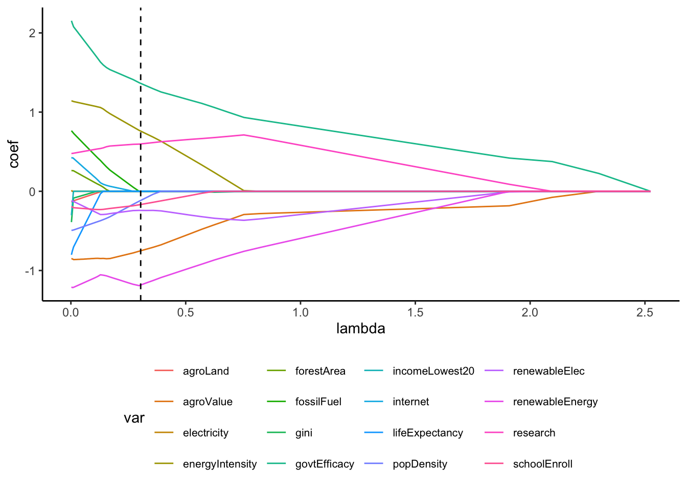
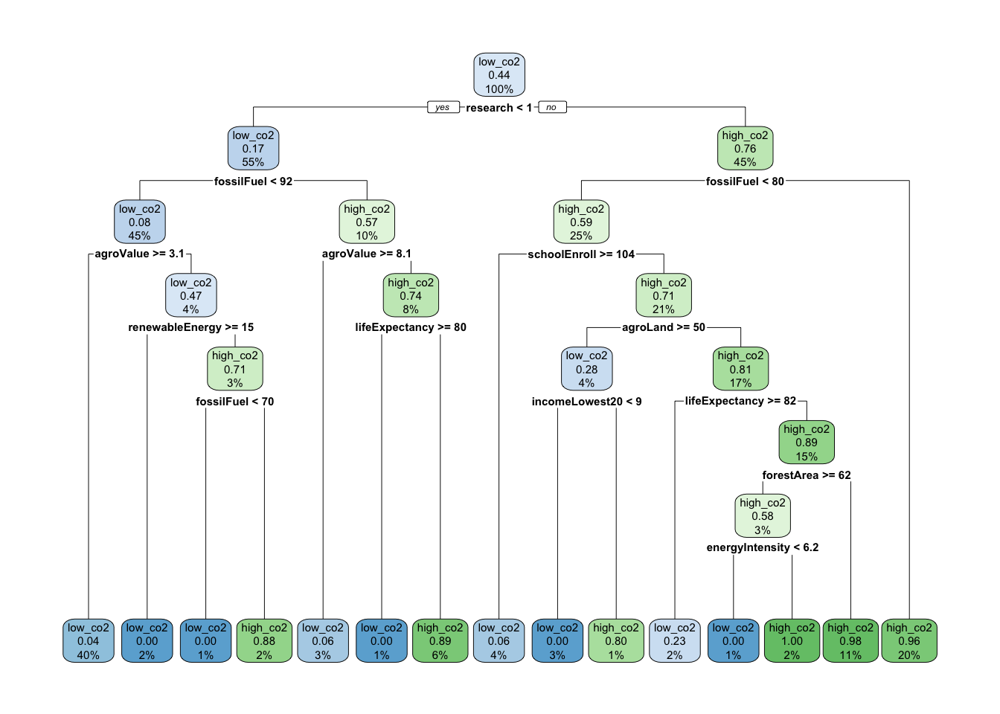

Rows: 16013 Columns: 67
── Column specification ────────────────────────────────────────────────────────
Delimiter: ","
chr (4): Country Name, Country Code, Indicator Name, Indicator Code
dbl (62): 1960, 1961, 1962, 1963, 1964, 1965, 1966, 1967, 1968, 1969, 1970, ...
lgl (1): ...67
ℹ Use `spec()` to retrieve the full column specification for this data.
ℹ Specify the column types or set `show_col_types = FALSE` to quiet this message.
# A tibble: 67 × 2
`Indicator Name` `Indicator Code`
<chr> <chr>
1 Access to clean fuels and technologies for cooking (% of po… EG.CFT.ACCS.ZS
2 Access to electricity (% of population) EG.ELC.ACCS.ZS
3 Adjusted savings: natural resources depletion (% of GNI) NY.ADJ.DRES.GN.…
4 Adjusted savings: net forest depletion (% of GNI) NY.ADJ.DFOR.GN.…
5 Agricultural land (% of land area) AG.LND.AGRI.ZS
6 Agriculture, forestry, and fishing, value added (% of GDP) NV.AGR.TOTL.ZS
7 Annual freshwater withdrawals, total (% of internal resourc… ER.H2O.FWTL.ZS
8 Annualized average growth rate in per capita real survey me… SI.SPR.PCAP.ZG
9 Cause of death, by communicable diseases and maternal, pren… SH.DTH.COMM.ZS
10 Children in employment, total (% of children ages 7-14) SL.TLF.0714.ZS
# ℹ 57 more rows
# Getting metricscv_output <-fit_resamples( # new function for tuning parameters esg_model_wf1, # workflowresamples = esgdata_cv10, # cv foldsmetrics =metric_set(rmse, mae, rsq))cv_output %>%collect_metrics()
# A tibble: 3 × 6
.metric .estimator mean n std_err .config
<chr> <chr> <dbl> <int> <dbl> <chr>
1 mae standard 1.99 10 0.0972 Preprocessor1_Model1
2 rmse standard 2.79 10 0.178 Preprocessor1_Model1
3 rsq standard 0.631 10 0.0262 Preprocessor1_Model1
# Residuals esg_fit_model1_residuals <-bind_cols(esgdataAll_sub, esg_fit_model1 %>%predict(new_data = esgdataAll_sub)) %>%mutate(resid = co2 - .pred)ggplot(esg_fit_model1_residuals, aes(x = .pred, y = resid)) +geom_point() +geom_smooth() +geom_hline(yintercept =0, color ="red") +ggtitle("Linear Regression Residuals") +labs(x ="Fitted values", y ="Residuals") +theme_classic() # fit to the training data
`geom_smooth()` using method = 'loess' and formula = 'y ~ x'
LASSO Model
data_rec <-recipe(co2 ~ . , data = esgdataAll_sub) %>%update_role(`Year`,new_role ='ID') %>%update_role(`CountryCode`,new_role ='ID') %>%update_role(`CountryName`,new_role ='ID') %>%step_nzv(all_predictors()) %>%# removes variables with the same valuestep_normalize(all_numeric_predictors()) %>%# important standardization step for LASSOstep_dummy(all_nominal_predictors()) # creates indicator variables for categorical variables# Lasso Model Spec with tunelm_lasso_spec_tune <-linear_reg() %>%set_args(mixture =1, penalty =tune()) %>%## mixture = 1 indicates Lassoset_engine(engine ='glmnet') %>%#note we are using a different engineset_mode('regression') # Workflow (Recipe + Model)lasso_wf_tune <-workflow() %>%add_recipe(data_rec) %>%add_model(lm_lasso_spec_tune) # Tune Model (trying a variety of values of Lambda penalty)penalty_grid <-grid_regular(penalty(range =c(-3, 1)), #log10 transformed levels =30)tune_output <-tune_grid( # new function for tuning hyperparameters lasso_wf_tune, # workflowresamples = esgdata_cv10, # cv foldsmetrics =metric_set(rmse, mae),grid = penalty_grid # penalty grid defined above)autoplot(tune_output) +theme_classic()
Picking LASSO Penalty
best_penalty <-select_best(tune_output, metric ='mae') # choose penalty value based on lowest maebest_penalty
best_se_penalty <-select_by_one_std_err(tune_output, metric ='mae', desc(penalty)) # choose penalty value based on the largest penalty within 1 se of the lowest CV MAEbest_se_penalty
final_wf <-finalize_workflow(lasso_wf_tune, best_penalty) # incorporates penalty value to workflowfinal_wf_se <-finalize_workflow(lasso_wf_tune, best_se_penalty) # incorporates penalty value to workflowfinal_fit <-fit(final_wf, data = esgdataAll_sub)final_fit_se <-fit(final_wf_se, data = esgdataAll_sub)tidy(final_fit)
glmnet_output <- final_fit_se %>%extract_fit_parsnip() %>%pluck('fit') # way to get the original glmnet outputlambdas <- glmnet_output$lambdacoefs_lambdas <-coefficients(glmnet_output, s = lambdas ) %>%as.matrix() %>%t() %>%as.data.frame() %>%mutate(lambda = lambdas ) %>%select(lambda, everything(), -`(Intercept)`) %>%pivot_longer(cols =-lambda, names_to ="term", values_to ="coef") %>%mutate(var =map_chr(stringr::str_split(term,"_"),~.[1]))coefs_lambdas %>%ggplot(aes(x = lambda, y = coef, group = term, color = var)) +geom_line() +geom_vline(xintercept = best_se_penalty %>%pull(penalty), linetype ='dashed') +theme_classic() +theme(legend.position ="bottom", legend.text=element_text(size=8))

# Create a boolean matrix (predictors x lambdas) of variable exclusionbool_predictor_exclude <- glmnet_output$beta==0# Loop over each variablevar_imp <-sapply(seq_len(nrow(bool_predictor_exclude)), function(row) { this_coeff_path <- bool_predictor_exclude[row,]if(sum(this_coeff_path) ==ncol(bool_predictor_exclude)){ return(0)}else{return(ncol(bool_predictor_exclude) -which.min(this_coeff_path) +1)}})# Create a dataset of this information and sortvar_imp_data <-tibble(var_name =rownames(bool_predictor_exclude),var_imp = var_imp)var_imp_data %>%arrange(desc(var_imp))
# A tibble: 2 × 7
penalty .metric .estimator mean n std_err .config
<dbl> <chr> <chr> <dbl> <int> <dbl> <chr>
1 0.304 mae standard 2.04 10 0.111 Preprocessor1_Model19
2 0.304 rmse standard 2.91 10 0.204 Preprocessor1_Model19
lasso_mod_out <- final_fit_se %>%predict(new_data = esgdataAll_sub) %>%bind_cols(esgdataAll_sub) %>%mutate(resid = co2 - .pred)ggplot(esg_fit_model1_residuals, aes(x = .pred, y = resid)) +geom_point() +ggtitle('Linear Regression Final Model') +geom_smooth() +geom_hline(yintercept =0, color ="red") +labs(x ="Fitted values", y ="Residuals") +theme_classic() # fit to the training data
`geom_smooth()` using method = 'loess' and formula = 'y ~ x'
lasso_mod_out %>%ggplot(aes(x = .pred, y = resid)) +ggtitle('LASSO Residuals') +geom_point() +geom_smooth(se =FALSE) +geom_hline(yintercept =0, color ="red") +theme_classic()
`geom_smooth()` using method = 'loess' and formula = 'y ~ x'
`geom_smooth()` using method = 'loess' and formula = 'y ~ x'
`geom_smooth()` using method = 'loess' and formula = 'y ~ x'
`geom_smooth()` using method = 'loess' and formula = 'y ~ x'
`geom_smooth()` using method = 'loess' and formula = 'y ~ x'
`geom_smooth()` using method = 'loess' and formula = 'y ~ x'
`geom_smooth()` using method = 'loess' and formula = 'y ~ x'
`geom_smooth()` using method = 'loess' and formula = 'y ~ x'
`geom_smooth()` using method = 'loess' and formula = 'y ~ x'
We will be using 6.550097 as the split for deciding if the country has high CO2 emissions or low CO2 emissions. ### Logistic Regression
# Logistic Regression Model Speclogistic_spec <-logistic_reg() %>%set_engine('glm') %>%set_mode('classification')# Recipe logistic_rec <-recipe( CO2cat ~ ., data = esgdataAll_sub) %>%update_role(`CountryCode`,new_role ='ID') %>%update_role(`CountryName`,new_role ='ID') %>%step_rm(co2) %>%step_nzv(all_predictors()) %>%# removes variables with the same valuestep_normalize(all_numeric_predictors()) %>%# important standardization step for LASSOstep_dummy(all_nominal_predictors()) # creates indicator variables for categorical variables# Workflow (Recipe + Model)log_wf <-workflow() %>%add_recipe(logistic_rec) %>%add_model(logistic_spec) # Fit Model to Training Datalog_fit <-fit(log_wf, data = esgdataAll_sub)
Warning: glm.fit: fitted probabilities numerically 0 or 1 occurred
Truth
Prediction low_co2 high_co2
low_co2 357 39
high_co2 45 272
log_metrics <-metric_set(sens, yardstick::spec, accuracy) # these metrics are based on hard predictions#sens: sensitivity = chance of correctly predicting second level, given second level (Yes)#spec: specificity = chance of correctly predicting first level, given first level (No)#accuracy: accuracy = chance of correctly predicting outcomelogistic_output %>%log_metrics(estimate = .pred_class, truth = CO2cat, event_level ="second") # set second level of outcome as "success"
logistic_output <- esgdataAll_sub %>%bind_cols(predict(log_fit, new_data = esgdataAll_sub, type ='prob')) logistic_roc <- logistic_output %>%roc_curve(CO2cat, .pred_high_co2, event_level ="second") # set second level of outcome as "success"autoplot(logistic_roc) +theme_classic()
set.seed(123) esgdataAll_sub_cv10 <-vfold_cv(esgdataAll_sub, v =10)# CV Fit Model log_cv_fit <-fit_resamples( log_wf, resamples = esgdataAll_sub_cv10,metrics =metric_set(sens, yardstick::spec, accuracy, roc_auc),control =control_resamples(save_pred =TRUE, event_level ='second')) # you need predictions for ROC calculations
→ A | warning: glm.fit: fitted probabilities numerically 0 or 1 occurred
There were issues with some computations A: x1
There were issues with some computations A: x10
collect_metrics(log_cv_fit) #default threshold is 0.5
Warning: Cannot retrieve the data used to build the model (so cannot determine roundint and is.binary for the variables).
To silence this warning:
Call rpart.plot with roundint=FALSE,
or rebuild the rpart model with model=TRUE.
Warning: Cannot retrieve the data used to build the model (so cannot determine roundint and is.binary for the variables).
To silence this warning:
Call rpart.plot with roundint=FALSE,
or rebuild the rpart model with model=TRUE.

Random Forest
# Model Specificationrf_spec <-rand_forest() %>%set_engine(engine ='ranger') %>%set_args(mtry =NULL, # size of random subset of variables; default is floor(sqrt(number of total predictors))trees =1000, # Number of treesmin_n =2,probability =FALSE, # FALSE: get hard predictions (not needed for regression)importance ='impurity') %>%# we'll come back to this at the endset_mode('classification') # change this for regression# Recipedata_rec_rf <-recipe(CO2cat ~ ., data = esgdataAll_sub) %>%update_role(`CountryCode`,new_role ='ID') %>%update_role(`CountryName`,new_role ='ID') %>%step_rm(co2) %>%step_nzv(all_predictors()) %>%# removes variables with the same valuestep_dummy(all_nominal_predictors()) # creates indicator variables for categorical variables# Workflowsdata_wf_mtry2 <-workflow() %>%add_model(rf_spec %>%set_args(mtry =2)) %>%add_recipe(data_rec_rf)## Create workflows for mtry = 4, 9, and 17data_wf_mtry4 <-workflow() %>%add_model(rf_spec %>%set_args(mtry =4)) %>%add_recipe(data_rec_rf)data_wf_mtry9 <-workflow() %>%add_model(rf_spec %>%set_args(mtry =9)) %>%add_recipe(data_rec_rf)data_wf_mtry17 <-workflow() %>%add_model(rf_spec %>%set_args(mtry =17)) %>%add_recipe(data_rec_rf)
set.seed(726) # make sure to run this before each fit so that you have the same 1000 treesdata_fit_mtry2 <-fit(data_wf_mtry2, data = esgdataAll_sub)set.seed(726)data_fit_mtry4 <-fit(data_wf_mtry4, data = esgdataAll_sub)set.seed(726) data_fit_mtry9 <-fit(data_wf_mtry9, data = esgdataAll_sub)set.seed(726)data_fit_mtry17 <-fit(data_wf_mtry17, data = esgdataAll_sub)
rf_OOB_output <-function(fit_model, model_label, truth){tibble(.pred_class = fit_model %>%extract_fit_engine() %>%pluck('predictions'), #OOB predictionsclass = truth,model = model_label )}#check out the function outputrf_OOB_output(data_fit_mtry2,'mtry2', esgdataAll_sub %>%pull(CO2cat))
# A tibble: 102 × 3
kclust_4 CountryName n
<fct> <chr> <int>
1 1 Australia 2
2 1 Austria 14
3 1 Belgium 14
4 1 Canada 9
5 1 Czech Republic 2
6 1 Denmark 12
7 1 Estonia 6
8 1 Finland 14
9 1 France 13
10 1 Germany 16
# ℹ 92 more rows
esg_cluster_ss <-function(k){# Perform clustering kclust <-kmeans(scale(SUB), centers = k)# Return the total within-cluster sum of squaresreturn(kclust$tot.withinss)}tibble(k =1:15,tot_wc_ss = purrr::map_dbl(1:15, esg_cluster_ss)) %>%ggplot(aes(x = k, y = tot_wc_ss)) +geom_point() +labs(x ="Number of clusters",y ='Total within-cluster sum of squares') +theme_classic()